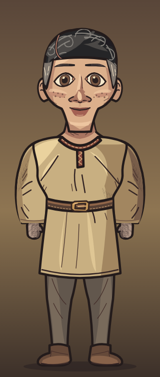

<!doctype html><html lang="ru"><meta charset="utf-8"><meta name="viewport" content="width=device-width,initial-scale=1"><title>Рукавицы · материал</title><style>body{font:16px system-ui;background:#25201b;color:#eee2cd;margin:0 auto;max-width:1280px;padding:1rem}
    a{color:#f4ca91}h1,h2{font:700 1.7rem Georgia,serif}nav ul{columns:3}.grid{display:grid;gap:1rem;
    grid-template-columns:repeat(auto-fit,minmax(230px,1fr))}article{min-width:0;border:1px solid #655343;
    background:#312821;padding:.6rem;border-radius:5px}a img{vertical-align:middle}img{max-width:100%;height:auto}
    .character{display:block;max-height:460px;width:auto;margin:auto}.card{width:32px;height:32px}
    .detail{display:block;width:100%;margin:.35rem 0}.compare{display:flex;align-items:flex-start;gap:.5rem}
    .compare a{flex:1;min-width:0}small{color:#dccab0}code{overflow-wrap:anywhere}@media(max-width:730px){nav ul{columns:1}}</style><main><nav><a href="index.html">Все разделы</a></nav><h1>Рукавицы · материал</h1><div class="grid"><article id="material__gloves_material__wool_mittens__wool"><h3>Шерсть</h3><code>wool</code><a href="images/ae7be650d20cfd5f92ee0b461517f871d9facea14b161d90991d05c2d928378e.png"></a><p><a href="images/0481da630c3420961a91cdba0a6f6f7b594294924c8cb8608cd88c11926647a1.png"></a> <small>32 × 32</small></p><details><summary>До и после</summary><div class="compare"><span>До<a href="images/8a82a9675621b94d51d6488296f1f7fce46af825073404c4c68b065100a95494.png"></a></span><span>После<a href="images/ae7be650d20cfd5f92ee0b461517f871d9facea14b161d90991d05c2d928378e.png"></a></span></div></details></article>
<article id="material__gloves_material__wool_mittens__coarse_wool"><h3>Грубая шерсть</h3><code>coarse_wool</code><a href="images/d24bae035f4fcc836e5be5e7db647e6361e0bbbe6fbffc4dae709a45b4934cda.png"></a><p><a href="images/0481da630c3420961a91cdba0a6f6f7b594294924c8cb8608cd88c11926647a1.png"></a> <small>32 × 32</small></p><details><summary>До и после</summary><div class="compare"><span>До<a href="images/28ddb284a0cec8a776923caa5cc0091d6830cf6f2db85b7333fea16f5bb7ca36.png"></a></span><span>После<a href="images/d24bae035f4fcc836e5be5e7db647e6361e0bbbe6fbffc4dae709a45b4934cda.png"></a></span></div></details></article>
<article id="material__gloves_material__wool_mittens__fine_wool"><h3>Тонкая шерсть</h3><code>fine_wool</code><a href="images/d555bc88a929d469d85f95f133b85df25d17cf9791495efd812b7348a4eb2ecb.png"></a><p><a href="images/0481da630c3420961a91cdba0a6f6f7b594294924c8cb8608cd88c11926647a1.png"></a> <small>32 × 32</small></p><details><summary>До и после</summary><div class="compare"><span>До<a href="images/faaaf9356b88fa6aac55fc5e426111ddc0745f914f5843923a7b889f9d0a09c1.png"></a></span><span>После<a href="images/d555bc88a929d469d85f95f133b85df25d17cf9791495efd812b7348a4eb2ecb.png"></a></span></div></details></article>
<article id="material__gloves_material__work_mittens__leather"><h3>Выделанная кожа</h3><code>leather</code><a href="images/799e3a164cd2d57e7b9ce804585a06b8bc74a8c9a0d3329a874c62d7d73ed661.png"></a><p><a href="images/0481da630c3420961a91cdba0a6f6f7b594294924c8cb8608cd88c11926647a1.png"></a> <small>32 × 32</small></p></article>
<article id="material__gloves_material__work_mittens__yuft"><h3>Юфть</h3><code>yuft</code><a href="images/f57891a8f4d1d65d2ec19ffdcfa99e7e4da05e3020dfdab26368a705ae50626f.png"></a><p><a href="images/0481da630c3420961a91cdba0a6f6f7b594294924c8cb8608cd88c11926647a1.png"></a> <small>32 × 32</small></p></article>
<article id="material__gloves_material__military_mittens__leather"><h3>Выделанная кожа</h3><code>leather</code><a href="images/3c63211f6799e148439347c8250af6b3d4d25176b0dba336c6d98f8769c1e329.png"></a><p><a href="images/0481da630c3420961a91cdba0a6f6f7b594294924c8cb8608cd88c11926647a1.png"></a> <small>32 × 32</small></p><details><summary>До и после</summary><div class="compare"><span>До<a href="images/cc2df6a237a0839e379481ae796be709905f35555b42f38592ac1ce5960cf865.png"></a></span><span>После<a href="images/3c63211f6799e148439347c8250af6b3d4d25176b0dba336c6d98f8769c1e329.png"></a></span></div></details></article>
<article id="material__gloves_material__military_mittens__wool"><h3>Шерсть</h3><code>wool</code><a href="images/74506a061b1a03c3da97eae813bd9c3d4c72ed7c252d8cd5d8da730551d9ab07.png"></a><p><a href="images/0481da630c3420961a91cdba0a6f6f7b594294924c8cb8608cd88c11926647a1.png"></a> <small>32 × 32</small></p><details><summary>До и после</summary><div class="compare"><span>До<a href="images/f60600438d9376b29d5af2b0cf7ba8359c5ffae29a450004a5162303bae9b83a.png"></a></span><span>После<a href="images/74506a061b1a03c3da97eae813bd9c3d4c72ed7c252d8cd5d8da730551d9ab07.png"></a></span></div></details></article>
<article id="material__gloves_material__auto"><h3>По фасону</h3><code>auto</code><a href="images/ae7be650d20cfd5f92ee0b461517f871d9facea14b161d90991d05c2d928378e.png"></a><p><a href="images/0481da630c3420961a91cdba0a6f6f7b594294924c8cb8608cd88c11926647a1.png"></a> <small>32 × 32</small></p><details><summary>До и после</summary><div class="compare"><span>До<a href="images/8a82a9675621b94d51d6488296f1f7fce46af825073404c4c68b065100a95494.png"></a></span><span>После<a href="images/ae7be650d20cfd5f92ee0b461517f871d9facea14b161d90991d05c2d928378e.png"></a></span></div></details></article></div></main></html>
